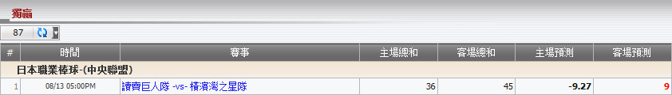

獨贏
定義:
顯示基於注單佔成數的總代理輸贏, 投注類型之: 獨贏。.

圖 1.1
用詞註解
- 主隊總和: 總代理從會員投注額基於佔成的所得總額, 如果選擇主隊投注。
- 客隊總和: 總代理從會員投注額基於佔成的所得總額, 如果選擇客隊投注。
- 主隊預測: 總代理可能會輸的數額, 若會員贏得他們所選擇的投注 (主隊)。
- 客隊預測: 總代理可能會輸的數額, 若會員贏得他們所選擇的投注 (客隊)。
从上图中, 我们得到以下的投注信息:
- 第一投注: 投注額 = 120, 賠率 = 0.43, 選擇 = 主隊 (讀賣巨人隊), 總代理佔成 = 30%
--> 主場總和 = 投注額 * 總代理佔成 * 1 = 120 * 30% * 1 = 36
--> 客場總和 = 0
--> 主场预测 = 投注額 * 总代理占成 * 赔率 = 120 * 30% * 0.43 = 15.48
--> 客场预测 = -投注額 * 总代理占成 = -120 * 30% = -36
- 第二投注: 投注額 = 150, 賠率 = -0.55, 選擇 = 客隊 (橫濱灣之星隊), 總代理佔成 = 30%
--> 主場總和 = 0
--> 客場總和 = 投注額 * 總代理佔成 * 1 = 150 * 30% * 1 = 45
--> 主場預測 = 投注額 * 總代理佔成 * 賠率 = 150 * 30% * (-0.55) = -24.75
--> 客場預測 = 投注額 * 總代理佔成 * 1 = 150 * 30% * 1 = 45
根據以上兩個投注, 我們得到最後的結果, 如下:
--> 主場總和 = 36 + 0 = 36
--> 客場總和 = 0 + 45 = 45
--> 主場預測 = 15.48 - 24.75 = -9.27
--> 客場預測 = -36 + 45 = 9
注:
- 主場總和
- 如果會員投注主隊, 那麼:
+ 若賠率絕對值 < 1 那麼: 主場總和= 投注額 * 總代理佔成* 1。
+ 若賠率絕對值 >= 1 那麼: 主場總和 = 投注額 * 總代理佔成 * |賠率|。
- 如果會員投注客隊, 那麼: 主場總和= 0。
- 客隊總和
- 如果會員投注主隊, 那麼: 客隊總和 = 0。
- 如果會員投注客隊, 那麼:
+ 若賠率絕對值 < 1 那麼: 客隊總和 = 投注額 * 總代理佔成 * 1。
+ 若賠率絕對值 >= 1 那麼: 客隊總和 = 投注額 * 總代理佔成 * |賠率|。
- 主場預測
- 若 賠率 < 0
+ 如果會員投注主隊, 那麼: 主場預測 = 投注額 * 總代理佔成 * 1。
+ 如果會員投注客隊, 那麼: 主場預測 = 投注額 * 總代理佔成 * 賠率。
- 若 賠率 > 0
+ 如果會員投注主隊, 那麼: 主場預測 = 投注額 * 總代理佔成 * 賠率。
+ 如果會員投注客隊, 那麼: 主場預測= -投注額 * 總代理佔成。
- 客場預測
- 若 賠率 < 0
+ 如果會員投注主隊, 那麼: 客場預測 = 投注额 * 總代理佔成 * 賠率。
+ 如果會員投注客隊, 那麼: 客場預測 = 投注额 * 總代理佔成 * 1。
- 若賠率 > 0
+ 如果會員投注主隊, 那麼: 客場預測 = -投注額 * 總代理佔成 * 賠率。
+ 如果會員投注客隊, 那麼: 客場預測 = -投注額 * 總代理佔成 * 賠率。